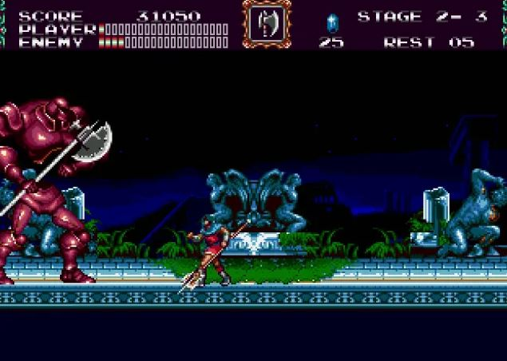

Castlevania

Fecha de lanzamiento: 18 de marzo de 1994
Género: Acción y plataformas
Desarrollador: Konami
Copias vendidas: 270,000
Sinopsis: La trama de Castlevania: Bloodlines se desarrolla en 1917 y sigue a dos personajes jugables: John Morris, un descendiente de la familia Belmont, y Eric Lecarde, quien busca vengar la muerte de su amada. Juntos se embarcan en una misión para detener a la hechicera Elizabeth Bartley, sobrina del Conde Drácula, quien planea resucitar a su tío y sembrar el caos en Europa durante la Primera Guerra Mundial.